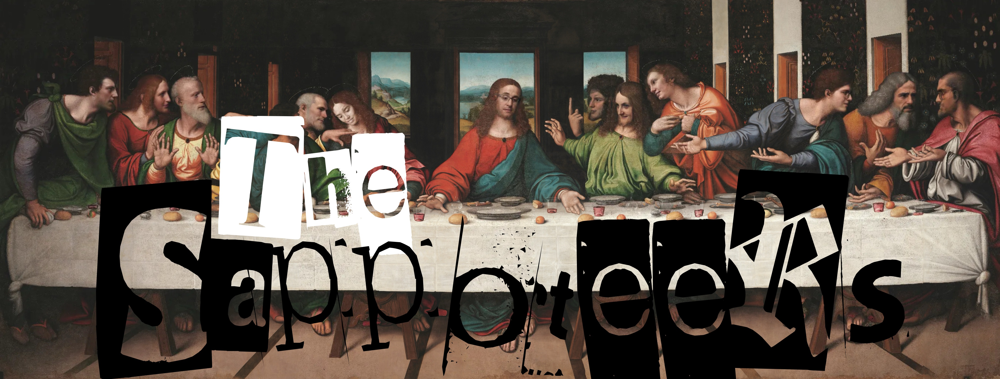

The Sappoteers welcome you to the Sappo Club!
{kind=link}
What is Sappo?#
A weekly social event on Friday evenings for CLI-MET people at the University of Reading and their friends.
Sappo Club outings are a very informal and loosely organised way to unwind at the end of the week, catch up with old friends and get to know other department members.
Note
Subscribers to the Met-Social mailing list (MET-SOCIAL@MAILLISTS.READING.AC.UK) receive weekly email reminders and flyers advertising the club and signalling the start of the weekend!
Where is Sappo?#
The starting point for Sappo is almost always the SCR (Senior Common Room @ Park House) as it is the closest watering hole to the buildings of the department with people starting to wander over at around 5:30 pm.
Food, drinks and lively entertainment inevitably follow at the SCR and at other venues that are usually attended afterwards. After the SCR, well anything can happen.
Why is Sappo?#
Sappoing isn’t just a club, it’s a whole way of life. The Sappoteers say that everything they have learnt in their existence, they have learnt during the Sappo Club!
Although Sappo Club is very informal affair, getting academics to all move in one direction is somewhat akin to herding cats so some organisation is required and someone at least needs to pretend to be in charge. This person is known as The Sappoteer.
A Sappoteer’s role can be broken down into two parts: At some point on a Friday afternoon the duty scientist will send round an e-mail to the department reminding everybody about the club hopefully encouraging people to come along and including a flyer with information about the night ahead. The second task is the to cast any required deciding votes as to destinations visited in the evening.
Who is Sappo?#
Sappo Club was started by Mathew “Sappo” Sapiano who was a PhD student at the department from 2001 - 2005. In the banner above you can see Sappo with his disciples from the renowned artwork “The Forecast Sappo”, currently located at Harry Pitt 181. It depicts the first Sappo that Sappo shared with his disciples before his weather forecast, capturing the moment when the typical British weather betrayed him.